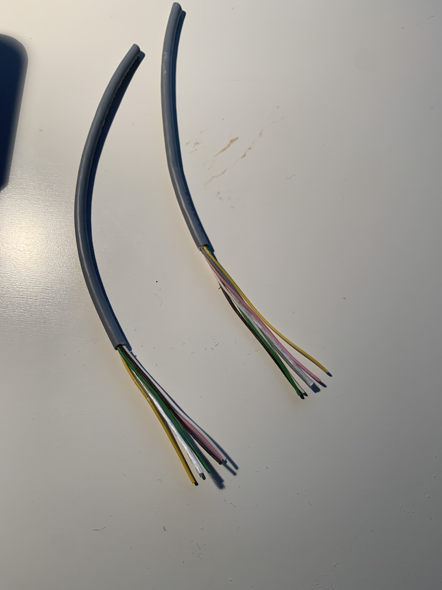
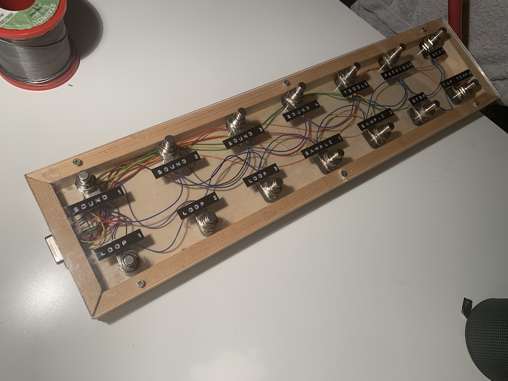

The Zoom B1Four
The Zoom B1Four is a fantastic low budget multieffect processor for electric bass. It is packed with features like effects, amp simulations and even a looper and a drum machine. Sounds can be easily edited using a software when the pedal is connected to the computer using a USB cable. The device costs just something like 90 Euros.
This is how it looks like.
There is one downside to the Zoom though. As can be seen on the picture, there are only two buttons that are meant to be used by the feet, the rest are buttons to tap with the finger.
Modifying the Zoom to control finger buttons by foot
Finger buttons need to be used to swith on/off effects in the chain
The two foot buttons are there to toggle between patches (sounds), one to go one up, the other to go one down. In the rhythm, looper, or edit mode they have different functions. If you are familiar with multieffect devices, the Zoom will be quite intuitive in a sense that it stores patches that consist of a chain of effects. One functionality that many multieffect devices have is that you simply turn on or off single effects of the chain. This way you can already play different sounds without actually changing the patch. The zoom can link up to five effects in one patch and the effects are turned on and off with the buttons number 1-5 (in edit mode). Let’s say you have an effect that has a compressor on chain position 1, a distortion on position 2 and then a reverb on position 3. If you want to play the sound without reverb you need to enter edit more (using the top left button) and then press button 3 to turn reverb on/off.
This is quite a limitation in a live setup because, playing bass, you rarely have a hand free to press a button. This means you cannot simply enter the edit mode and then press button 3 (in our example to switch of the reverb effect).
Opening the device and finding the right wires
To overcome this limitation and make the device more useful in a playing situation, I opened the casing to find out how the buttons are wired. Opening it is easy, you simple need to open the four screws on the bottom side and then lift the grey metal cover gently with a screwdriver starting at the side of the battery case (there is little ditch where the screwdriver needs to be placed).
Once opened, it is obvious that the PCB is actually quite spacious and it is really easy to see where the buttons are wired to.

As the picture shows, the buttons’ pins end up in the PCB just opposite of the respective buttons, so it is quite simple to understand. Also they are soldered into the board in a way that there is is still lots of space around them and the contact itself is also fairly large so it is very easy to solder an additional cable to it (see below). This makes the Zoom super hackable. Great!
Testing the button functionality
Using a multimeter, it can easily be figured out how the switching works. When you meausure the voltage between the two pins of one button, there is (if I remember correctly) a voltage difference of 3.3V between the two pins. When using the beep-function of the multimeter it can be figured out, that one of the pins is ground because the ground of all the buttons are interconnected (i.e., the multimeter beeps when holding it to two pins that are connected via ground). So the buttons seem to have a pull-down logic functionality: one pin is at 3.3V and the other on ground and when the button is pressed the 3.3V are being connected to ground, the 3.3V turn to zero and this way the button press is registered by the controller. This can be verified by connecting the two pins of on the back of the PCB belonging to one button using a jumper wire. When doing that, it is like when pressing the button on the front side: the device reacts. That’s good news because it means that any additional button that shortcuts the two pins can be attached.
I noticed two peculiarities in the button wiring that are important to know:
- For whatever reason, which pin (left or right) is ground and which is positive is not the same for all buttons. Sometimes it is the one way around, sometimes the other. You need to measure it for every button individually.
- All grounds are connected except for the “settings” button. However, the device did not bother that I connected it to the common ground so it does not seem to matter (I hope).
Creating an opening for cables of the footswitch
Next, I drilled a whole in the plastic case for the cable. I chose a position at the back part of the device between the 6.3mm “Input” connected and the 3.5mm “Aux in” in. But it could also be positioned somewhere else.

As I wanted to connect all 11 buttons to footswitches, I used two cables each containing 6 lines.

Wiring scheme
Then I decided for a wiring scheme. This is, of course, arbitrary and depends on the way one wants to assign buttons to functions. I have a custom built footswitch already that has 14 buttons in total, arranged in two rows. In my button bar, the front row are (from left to right) buttons 1-7 and the back row 8-14.

Don’t get confused by the labels, they belong to a different application. The 14 buttons here are all wired to channels 1-14 of a DSUB-15 connector (on the right side of the bar) and the ground goes to pin 15.
Then I decided which button should control which function of the Zoom B1Four. I decided for the following:
- Button 1-5 of the front row will control the buttons 1-5 of the Zoom, which are used to toggle on/off effects of the chain (in edit mode)
- Button 6 & 7 should control up and down (switching patches)
- Button 1 of the back row (effectively button 8 of the bar) should start “edit”" mode
- Button 2 of the back row the “settings” button
- Button 3 of the back row the rhythm function
- Button 4 of the back row the looper function
I then used one of the six-line cables to connect buttons 1-5 of the front row and the remaining line for ground. Of the second cable I connected 6 & 7 of the front rwo and the 4 buttons of the back row.
Soldering the cables
First I soldered all the cables to a DSUB-15 connector. To avoid mistakes, it makes sense to come up with a mapping of colors to lines, which is, again, arbitrary but useful so things don’t get messed up.

Then I lead the cables through the hole and soldered them to the PCB.
I took ground from the button 5, but it does not matter, ground is ground.
Closing the device
After closing the device again the footswitch can be connected to the DSUB connector.

Testing the functionality
After having reassembled the device it is time to test the setup.
This is how it looks like, once it is wired.

Video of functions
In this quick video it can be seen that all buttons do what they are supposed to. All works!